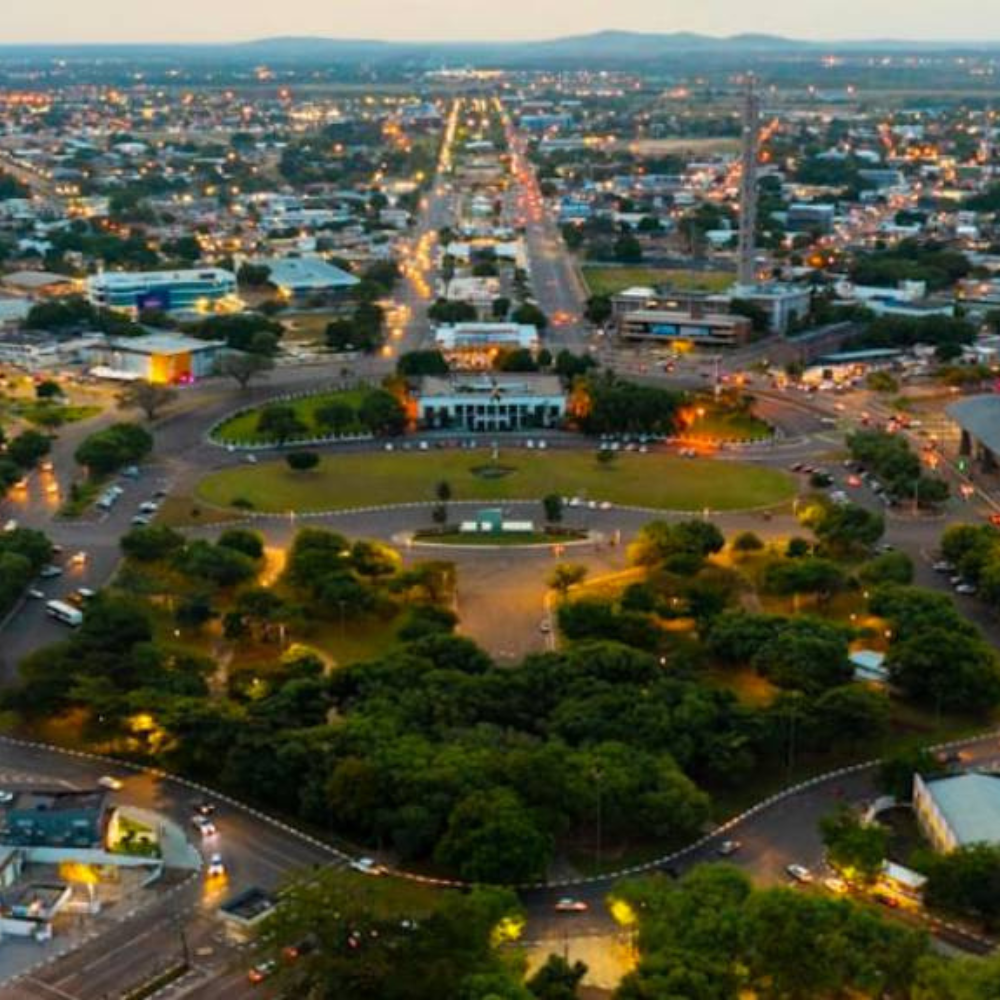

O estado de Rondônia pertence à Região Norte do Brasil e sua capital é Porto Velho.O estado destaca-se por sua história profundamente ligada ao ciclo da borracha e à construção da histórica Estrada de Ferro Madeira-Mamoré, além de sua forte expansão agrícola baseada na produção de café, soja e pecuária. Geograficamente, é banhado pelo Rio Madeira, um dos principais afluentes do Rio Amazonas, e faz fronteira com a Bolívia, o que confere ao estado uma posição estratégica de integração sul-americana.

Voltar